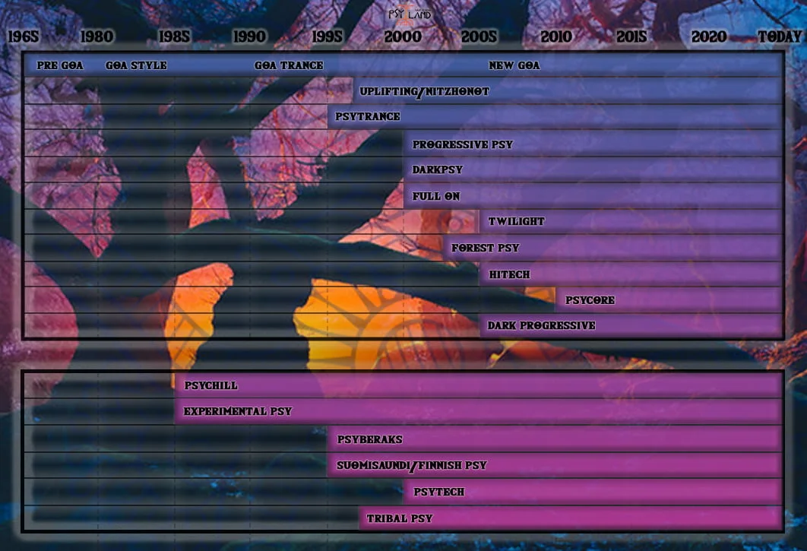
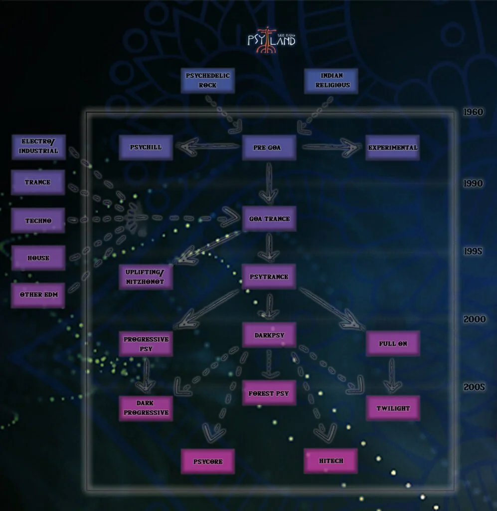
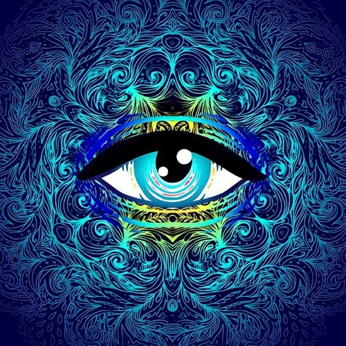
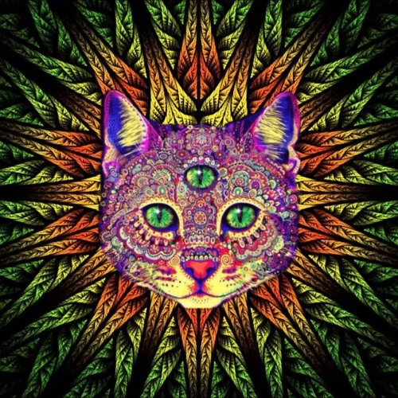

The different subgenres within trance are shaped by varying tempos, moods, and structural elements, allowing for both introspective
and high-energy experiences. Whether you’re looking for emotional highs, psychedelic immersion, or deep, progressive
soundscapes, trance’s diversity is what makes it so captivating.

Timeline of trance
Each subgenre in trance brings something unique to the table, offering distinct atmospheres and experiences that set them apart while maintaining the genre's core characteristics of repetition, melody, and hypnotic energy.

Evolution of Trance
Trance music has evolved significantly since its emergence in the early 1990s. Originating from the early techno and house scenes, trance quickly developed a distinct sound characterized by fast tempos, hypnotic beats, and melodic progressions. Early pioneers like Paul van Dyk, Tiesto, and Ferry Corsten helped shape the foundational uplifting and progressive trance sounds, with tracks that focused on euphoric buildups and emotional releases. As the genre gained popularity in Europe, it became synonymous with large-scale festivals and a global dance music culture, with the iconic "four-to-the-floor" beat becoming a hallmark of its sound.
Goa Trance
Goa Trance is a subgenre of psychedelic trance that originated in the late 1980s and early 1990s on the beaches of Goa, India. It's characterized by its hypnotic, repetitive beats, and complex layered melodies, often infused with spiritual or mystical themes. Goa trance typically ranges between 130-150 BPM and uses intricate synth patterns, acid-like sounds, and tribal elements.
Progressive Trance
Known for its gradual build-ups and minimal breakdowns, progressive trance focuses on smooth, evolving melodies and layers. It’s more subdued than other forms of trance, with a deep, hypnotic flow perfect for extended sets.

Uplifting Trance
Characterized by euphoric melodies, high-energy beats, and emotional breakdowns, uplifting trance is designed to create a powerful sense of joy and elevation. It often features big, soaring synths and uplifting chord progressions.

Psy Trance
Fast-paced and often between 140-150 BPM, psytrance features complex, mind-bending rhythms, and intricate, psychedelic soundscapes. It’s darker and more experimental, focusing on intense, hypnotic beats.
Hard Trance
As the name suggests, hard trance features a more aggressive, pounding sound, with fast tempos and harder basslines. It blends elements of hard techno and trance, making it intense and high-energy.